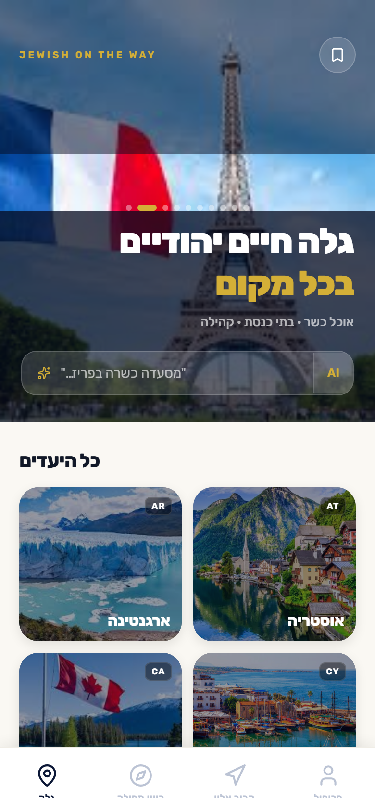
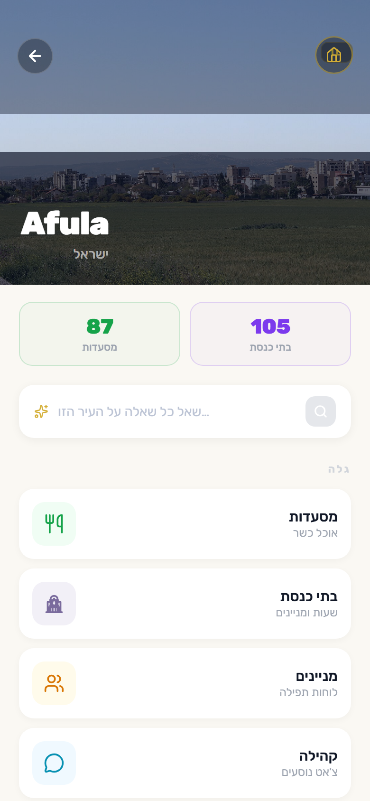
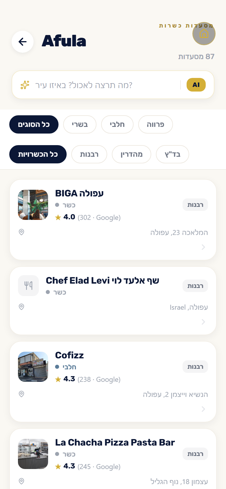
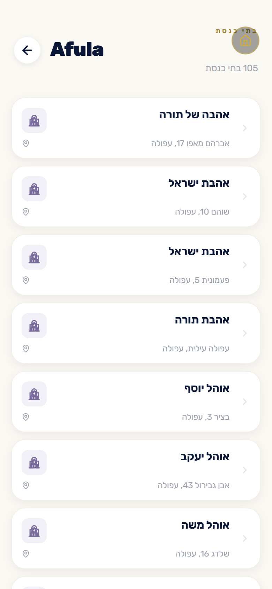
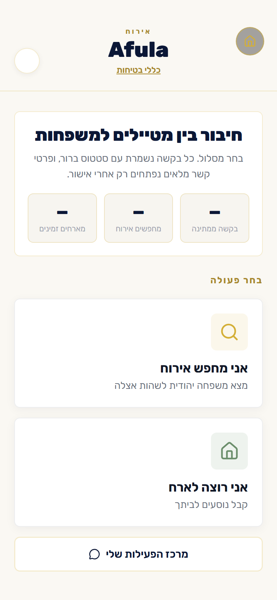
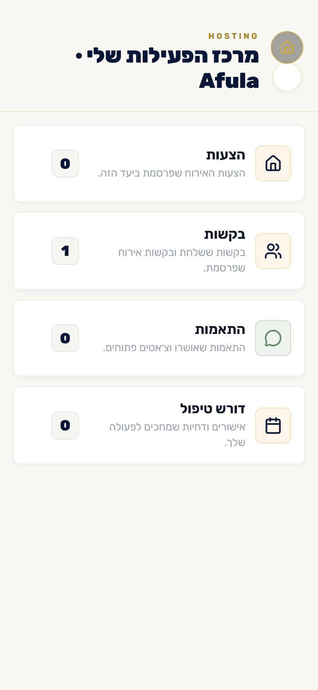

01
מסעדות כשרות
סוג אוכל, רמת כשרות, שעות פתיחה, טלפון וניווט לפי המיקום הנוכחי.
אפליקציה אחת שמרכזת מסעדות כשרות, בתי כנסת, מניינים, קהילה מקומית ואירוח לשבת למטיילים יהודים.
צילומי מסך מתוך Expo Web, בעברית, מחוברים למשתמש אמיתי ולנתונים מהשרת.






במקום לקפוץ בין מפות, קבוצות וואטסאפ והודעות ישנות, המטייל מקבל שכבת מידע אחת סביב היעד שבו הוא נמצא.
סוג אוכל, רמת כשרות, שעות פתיחה, טלפון וניווט לפי המיקום הנוכחי.
בתי כנסת קרובים, נוסח, כתובת, זמני תפילה ופרטי קשר שימושיים.
פיד מקומי לשאלות, המלצות ועדכונים, בלי לערבב את זה עם צ׳אט פרטי.
אורחים מפרסמים בקשה, מארחים מציעים, ורק אחרי אישור הדדי נפתח צ׳אט.
כותבים “חלבי פתוח עכשיו ליד בית חב״ד” ומקבלים תוצאות שמבינות הקשר.
ממשק שמתאים כיוון וטקסט לפי השפה, עם RTL נקי בעברית.
החיפוש בנוי סביב כוונה: אוכל, כשרות, מרחק, זמן, יעד וסוג מקום. זה מרגיש כמו לשאול מישהו מקומי שמכיר את העיר.
אירוח לא צריך להיות פוסט חופשי שנעלם בפיד. הוא צריך תהליך ברור: בקשה, הצעה, אישור הדדי, ואז שיחה פרטית.
רואה הצעות זמינות באותו יעד, מגיש בקשה מסודרת לפי תאריכים, כמות אורחים, ילדים, שבת וכשרות.
הקריאה לפעולה הכי נכונה כרגע היא רשימת בטא: לאסוף משתמשים ראשונים, מארחים ראשונים ופידבק לפני פתיחה רחבה.
הצטרפות לבטא